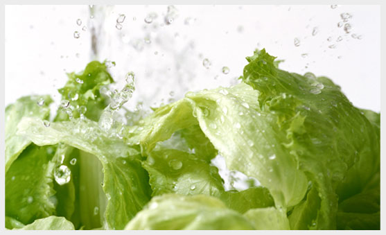

Voda

Voda daje zivot svemu zivom, nalazi se unutar nas, ulazi sa svakim nasim gutljajem, sa svakim udahom, okruzuje nas neznim dodirom pare, kapljicama kise, sneznim pokrivacem, i kao takva povezuje nas sa celim svetom, sa celom Prirodom.
Jer voda koju pijemo i voda koja tece kroz nase telo ista je ona voda koja tece u rekama, koja je zaledena u sneznim planinama.
Nista nam, kao Voda, ne omogucava da osetimo svoje jedinstvo sa prirodom. Zamislite kako razlicite tecnosti teku i mesaju se u nasem telu. Popijte casu vode, pokusajte da osetite kako je telo svakom celijom upija, kako se voda rastvara u organizmu, kako ga hrani i prociscava. Ista ta voda tece potocima, rekama, jezerima i uliva u mora i okeane. Sve je to deo prirode i covek je deo prirode skojom je u jedinstvu.
Postoji mnogo legendi zasnovanih na verovanju da voda pruza mladost, zivot, mudrost i besmrtnost. U mnogim kulturama cak se razvijao svojevrsni kult vode.
ZASTO JE VODA POTREBNA?
Ljudski organizam se u velikoj meri sastoji iz vode, cak 70%. Voda; ulazi u sastav unutarcelijskih i meducelijskih tecnosti-krvi, limfe, zeludacnih i crevnih sokova, mozdane tecnosti, tecnosti ociju i usiju, zglobova.
Razmena vode se neprekidno desava. Voda se izbacuje kroz znoj, isparava kroz kozu i pluca i luci se kroz mokracne kanale i debelo crevo. Ljudski organizam izbacuje dnevno prosecno 3,5l vode.
Prirodno, ti gubici moraju biti nadoknadeni. Neophodnost upotrebe vode je zakon zivota, koji ne smemo narusavati.
Ni jedan zivotni proces ne moze da se odigra bez vode. Celija koja gubi tecnost, jednostavno odumire i prestaje da zivi. Organizmu je za zivot potrebno vise od 5l krvi. Ta kolicina i neophodan sastav krvi ne bi mogli da se odrzavaju bez vode. Ni pluca ne bi mogla da disu ukoliko njihova povrsina ne bi bila vlazna.
Hrana ne sme da se usvaja bez vode. Pluvacka i zeludacni sok se 90% sastoje iz vode.
Upravo se pomocu vode desava razlaganje hrane, a rastvorljiv otpad se takode izbacuje pomocu vode.
Krvna plazma se 80% sastoji iz vode i tako obezbeduje okruzenje u kojem se odigravaju biohemijski procesi. Voda prenosi elektricne impulse izmedu celija, da bi misici mogli da se pokrecu, oci da vide, mozak da misli...
Voda regulise telesnu temperaturu - rashladuje telo putem vlage (znoja koji isparava kroz kozu.
I najzad, podmazuje pokretne delove ljudskog tela.
Iz svih tih razloga jasno je, da je odrzavanje ravnoteze tecnosti od kljucne vaznosti za organizam.
VODA KOJU PIJEMO
Najbolja voda za pice je prirodna, neprokuvana. Samo u takvoj vodi sacuvana je energija zivota. Posebnu paznju treba obratiti na vaznost sastava vode, a narocito na prisustvo vaznih prirodnih elemenata. Obicno se pod elektrolitima smatraju natrijum, kalijum hlor i magnezijum. Posebno su vazne soli magnezijuma jer magnezijum ne samo da blagotvorno deluje na misice, nerve i krvne sudove, olaksava tok svih prirodnih procesa, vec i preventivno stiti od raka.
Zavisno od sadrzaja minerala voda moze biti tvrda i meka.
TVRDA voda je ona koja izbija na povrsinu iz podzemnih izvora. Sadrzi kalcijum karbonat i moze biti blago slankasta.
MEKA voda je povrsinska, iz nabujalih potoka i kisnica. Ima manje minerala i bezukusna je.
Da li pijete tvrdu ili meku vodu zavisi od toga gde zivite, a flasirane vode su nesto sasvim drugo i mgu bitimineralne i izvorske, gazirane i negazirane.
Mineralna je voda je izvorska voda ali sa vecih dubina. Prirodno je bazna, pa je i prirodni diuretik.
Izvorska voda je mineralna, ali odnosi se na vodu iz izvora blizih povrsini, tako da ima manje minerala i nesto cistiji ukus od mineralne vode.
I izvorska i mineralna voda mogu biti gazirane i negazirane zavisno od sadrzaja ugljen dioksida.
Voda je postala sastavni deo nasih kupovina, poceli smo o njoj da razmisljamo i da je cenimo. Vazno nam je odakle dolazi, koje minerale sadrzi, primecujemo razlicite ukuse koji su posledica njihovog razlicitog sastava. Pojavljuju se reklame koje favorizuju odredjene vode, navode nas da se opredeljujemo prema njima .
Posto telo ne pravi zalihe vode, moramo je svakodnevno unositi u dovoljnim kolicinama, a prosecna kolicina vode za odrasle osobe iznosi 1,5-3 litre na dan, tj. 6-12 casa, ili onoliko mililitara koliko kilokalorija unesemo preko obroka. Ukoliko se povecava fizicka aktivnost ili ako se izlazemo povisenim temperaturama, neophodno je povecati unos vode, jer je neophodno da kroz tecnosti i odabranu hranu zadovoljimo dnevne potrebe organizma.
Prvi znak nedostatka tecnosti zed, a drugi znak je smanjenje mokrenja. Kao zastitni mehanizam i ako ga ne prepoznamo, tkiva ce poceti da se suse i dehidriraju i jedini je spas nadoknaditi izgubljenu vodu. Voda moze da se unese u organizam u cistom vidu ili kao deo proizvoda koji sadrze vodu - pre svega voca i povrca.
Vodu nije dovoljno piti samo kada osetimo zed. Osecaj zedi je signal da nam je organizam ozbiljno dehidrirao, a, ako smo vec sacekali da jako ozednimo, onda nije dobro da popijemo punu casu vode jer cemo time samo preopteriti do tada usporene bubrege.
Inace, gubitak tecnosti od samo pet posto izaziva ozbiljan energetski pad, dok je gubitak od 15% fatalan za organizam. Neke omiljene namirnice, kao sto su, kafa, gazirana pica, cokolada jaki su diuretici zbog kojih telo dodatno gubi vodu, pa veoma brzo nakon konzumiranja istih oseti jos veci umor i pad energije, a onda ponovo posegne za istim stimulansima i tako ulazi u zacarani krug.
Osnovna pravila za upotrebu vode je da je treba piti samo u pauzama izmedu obroka, ni u kom slucaju za vreme, niti odmah posle jela. Bili zedni ili ne, dobro je cesto uzimati nekoliko gutljaja vode. Najbolje je piti vodu sobne temperature, jer previse hladna voda usporava metabolizam, a to vodi povecanju kilograma.
Ukoliko ne osecate posebnu glad, obrok se moze zameniti vodom.
Ne treba zaboraviti da je voda takode hrana; ona je zaista proizvod neophodan za ishranu.
VODA JE NAJZDRAVIJE PICE, CAROBNI DAR PRIRODE KOJI CUVA NASE ZDRAVLJE, LEPOTU, SNAGU i DOBRO RASPOLOZENJE.
Osim sto nam je neophodna za pice, voda je sastavni deo vecine preparata namenjenih nezi i lepoti. Stetna delovanja raznih faktora cine da nam je neophodna 24-casovna zastita od isparavanja vlage. Zdrava koza sadrzi oko 70% vode i svako odstupanje od ovih parametara doprinosi da koza gubi elasticnost, odnosno dehidrira, ato kozu cini osetljivijom na spoljne uticaje. Simptomi koji bez razlike pogadaju i lice i telo jesu svrab, zatezanje, peckanje i bore.
Zbog toga je veoma vazno da kozu, kao najveci ljudski organ, koji stiti organizam od svih spoljnih faktora, negujemo pravilno i uvek je hranimo probranim i kvalitetnim proizvodima - vodom, pre svega.
VODA KAO PRIRODNI CISTAC ORGANIZMA
Voda prenosi hranjive materije, istovremeno vezuje za sebe stetne supstance, razgraduje ih, a onda sve to zajedno izlucuje. Vrlo cesto gresimo, jer uzimanjem gaziranih napitaka vocnih sokova, alkoholnih pica maskiramo osecaj zedi, a u stvari voda nije dosla do organa kojima je potrebna, jer secer iz tih napitaka svu vodu vezuje za sebe. A da ne govorimo o tome da tako unet secer opterecuje jetru i bubrege, a ima i znacajnu kalorijsku vrednost.
Zato je vazno da pijemo Vodu, cak i kada nismo zedni, jer samo tako ce se svi nakupljeni otrovi redovno izbacivati, organi ce moci redovno da funkcionisu, a koza ce biti primetno lepsa, meksa i redovno osvezavana iznutra.
VODA U BORBI PROTIV CELULITA
Redovna fizicka aktivnost, zdrava ishrana i uzimanje dovoljnih kolicina vode jesu osnovni preduslovi u borbi protiv celulita. Voda je od najvece vaznosti jer smanjuje osecaj gladi, regulise probavu, i doslovno ispira telo. Pijte je cesto u malim gutljajima, cak i onda kad niste zedni. Drzite vodu uvek nadohvat ruke jer namvoda daruje zdravlje, vitalnost, lepu i svezu kozu i savrsenu figuru.